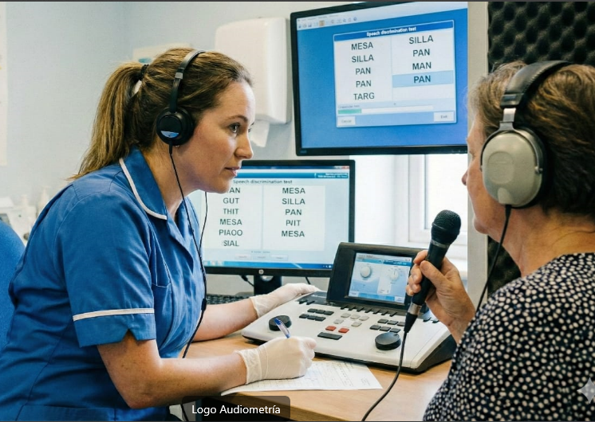
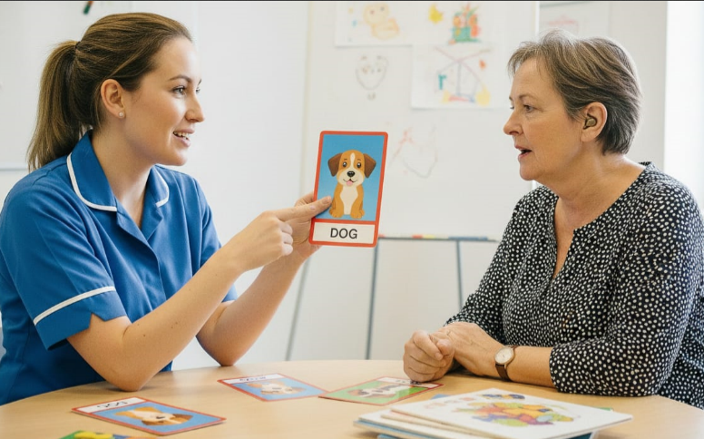

Servicios de Audiología
Soluciones auditivas personalizadas para mejorar tu calidad de vida
Revisión y limpieza de oído
- Es fundamental revisar los oídos para descartar problemas como tapones de cerumen, infecciones, lesiones en el conducto auditivo externo (CAE) o en el tímpano.
- Si existe un tapón de cerumen o un cuerpo extraño que obstruya el conducto, lo recomendable es acudir a un profesional capacitado.
- Intentar limpiarlo uno mismo puede empujar el tapón más adentro o incluso causar lesiones en el oído.

Audiometría
- La audiometría tonal es una prueba subjetiva que evalúa la capacidad de escuchar sonidos en diferentes frecuencias e intensidades.
- Es clave para detectar si existe pérdida auditiva, determinar el tipo de pérdida y establecer el grado.
- Con esta información se puede buscar la mejor solución para cada paciente.
Logo audiometria y Calibración de audifonos
- Es un proceso gradual que requiere tiempo y paciencia, ya que el cerebro y los oídos deben acostumbrarse a una nueva forma de escuchar.
- Incluye una evaluación inicial detallada, la selección del audífono más adecuado y su programación por un especialista.
- Posteriormente se realizan seguimientos para calibrar y ajustar el dispositivo según las necesidades del paciente.
Calibración Audifonos
- La audiometría tonal es una prueba subjetiva que evalúa la capacidad de escuchar sonidos en diferentes frecuencias e intensidades.
- Es clave para detectar si existe pérdida auditiva, determinar el tipo de pérdida y establecer el grado.
- Con esta información se puede buscar la mejor solución para cada paciente.
Adaptación de audífonos medicados
- Es un proceso gradual que requiere tiempo y paciencia, ya que el cerebro y los oídos deben acostumbrarse a una nueva forma de escuchar.
- Incluye una evaluación inicial detallada, la selección del audífono más adecuado y su programación por un especialista.
- Posteriormente se realizan seguimientos para calibrar y ajustar el dispositivo según las necesidades del paciente.

Terapia del habla
- La audiometría tonal es una prueba subjetiva que evalúa la capacidad de escuchar sonidos en diferentes frecuencias e intensidades.
- Es clave para detectar si existe pérdida auditiva, determinar el tipo de pérdida y establecer el grado.
- Con esta información se puede buscar la mejor solución para cada paciente.